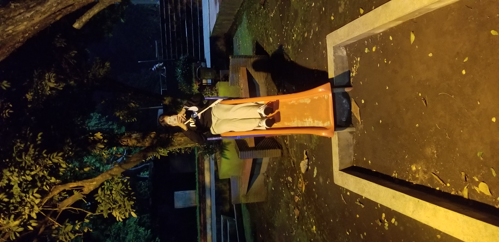
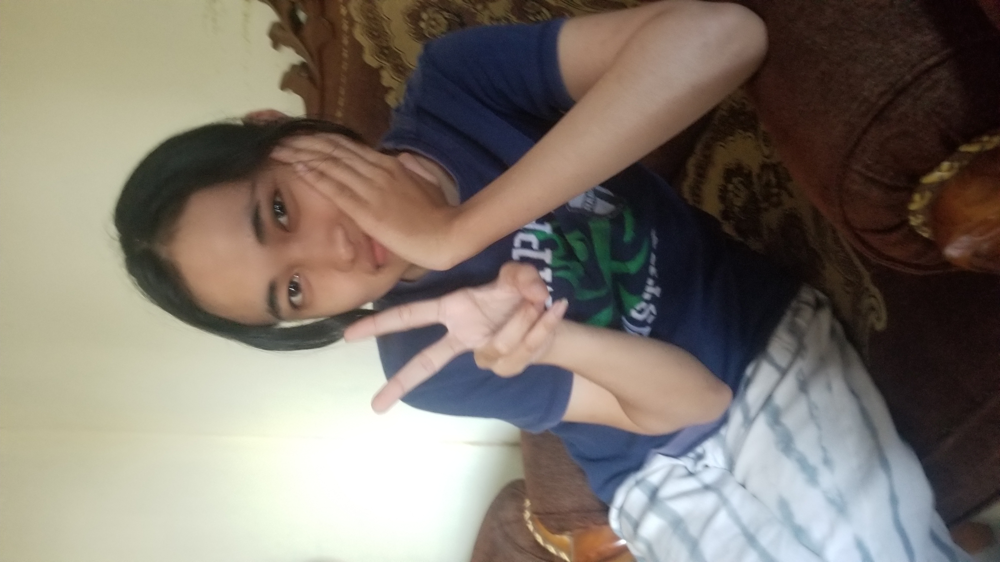

Wiii Ultah
selamat ulang tahun sayangku semoga di tahun ini apa yang kamu mau kamu capai bisa terwujud. Ngga usah banyak banyak, ngga udah besar besar yang kecapai, cukup bisa tidur teratur sama lebih bisa jaga dirimu sendiri udah bagus itu. Sama harus masih sayang sama aku juga xixixi. Mungkin banyak impian besarmu. Tapi kamu bisa capai hal kecil aja udah bagus. Yang penting udah lebih dari tahun kemarin. Mungkin tahun kemarin banyak hal yang ngga bisa kamu capai, tapi aku yakin kamu udah berusaha. Kamu aja berani buat masuk organisasi, daftar kerja. Aku ngga bisa gitu , aku bangga sama kamu. semangat ya sayangku
Aku pengin ada di tiap kamu memulai sampai bisa jadi yang kamu mau, jangan sungkan buat cerita apa aja. Mungkin aku emang gampang nesu tapi aku sayang kamu. Aku mau kamu puas sama hidupmu. enjoy kehidupanmu.
Jalan
Yey brangkat
Happy happy pertama kali kita ke solo

Pulangnya bedmod wkwkw
Aku yang salah sih wkwkwk, tapi seru kok kapan kapan lagi ya


makananya mahalll tapi view bagus sih

Ini the best sih

Seneng banget keliatannya dapet tiket gratis

Penghuni kos seram ter sksksksk

aduhai galaknya ya kadang galak sih tapi lucu kamu

ssebelum tragedi awokwkwkwk

mbak mbak pembuat kopi mantap
Udah 21 yah
Banyak hal yang harus kita capai, mungkin kedepannya kita bakal jarang ketemu. Aku sibuk ngonten. Mungkin kamu sibuk organisasi. Mungkin kita bakal sulit ketemu tapi aku sayang kamu kok. Aku suka liat kamu usaha kerja keras, kagum aku sama kamu semoga aku bisa se berani kamu. Yok kita mulai bareng capai mimpi kita. Mungkin kita sama sama cape kedepannya entah aku yang bedmod atau kamu, tapi aku masih sayang kamu dan bakal begitu terus . Maaf kalo aku banyak salah sama kamu. Semangat terus ya biar nanti kita bisa hidup enak. Aku pengin berusaha buat kamu Seneng . Lov u
Udah mau setahun kita udah banyak lika liku nya wkwkwk, semoga kita bisa terus barengan. Jujur, aku pingin kita kaya gini terus bisa keluar hepi hepi ketawa tawa, ini zona paling nyaman. Tapi waktu terus jalan, jadi banyak hal yang harus berubah juga kedepannya. Aku sayang kamu, apapun masalah kita nanti, yok sama sama kita pertahanin hubungan ini. Aku ngga bakal nyerah sama kamu. LOv UUu